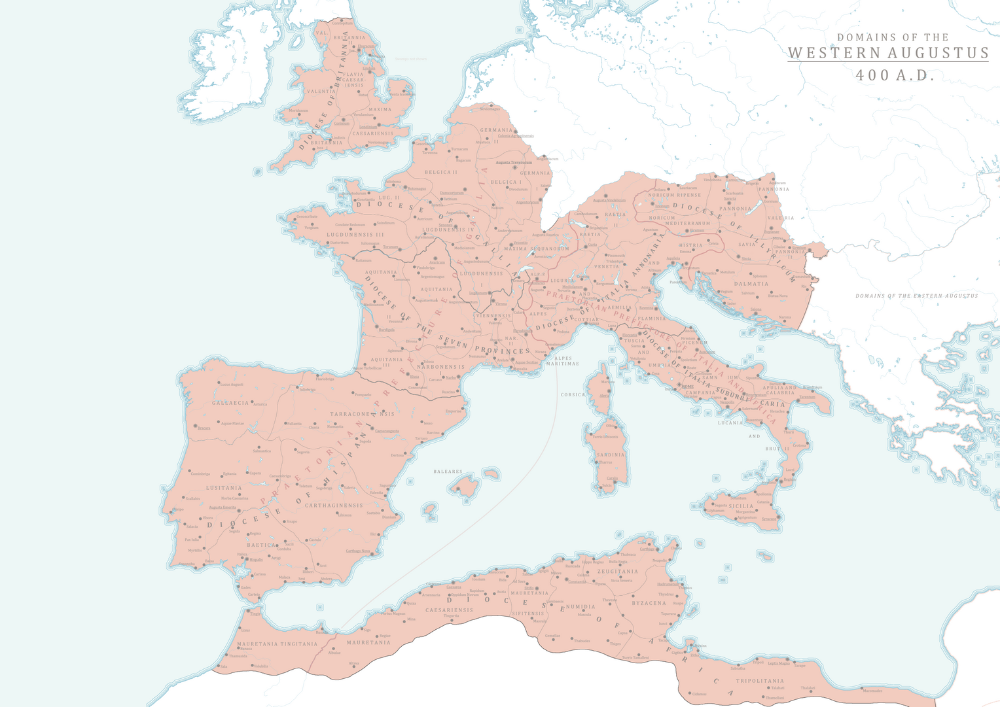
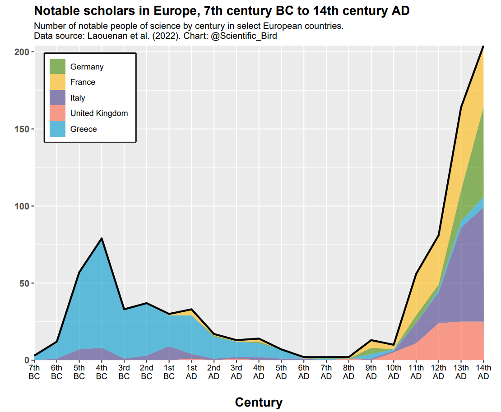
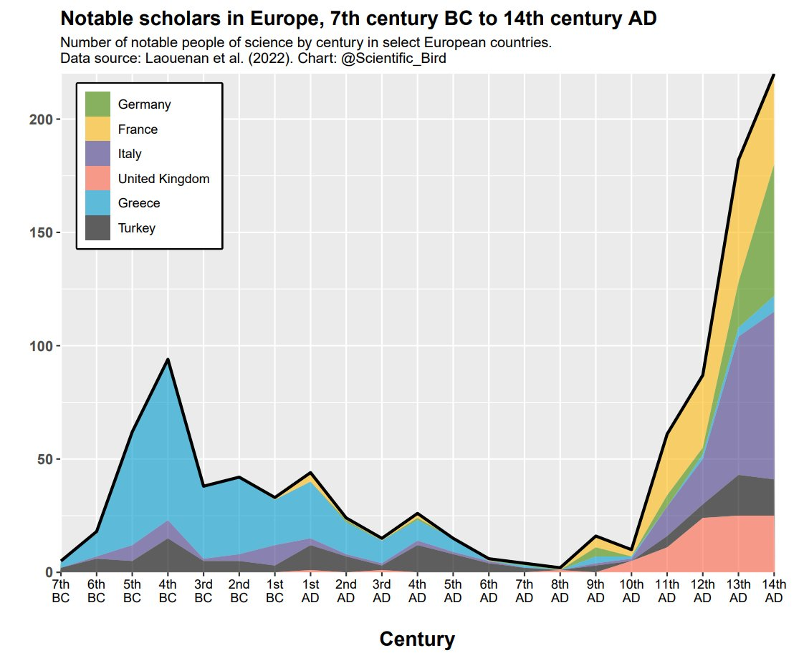
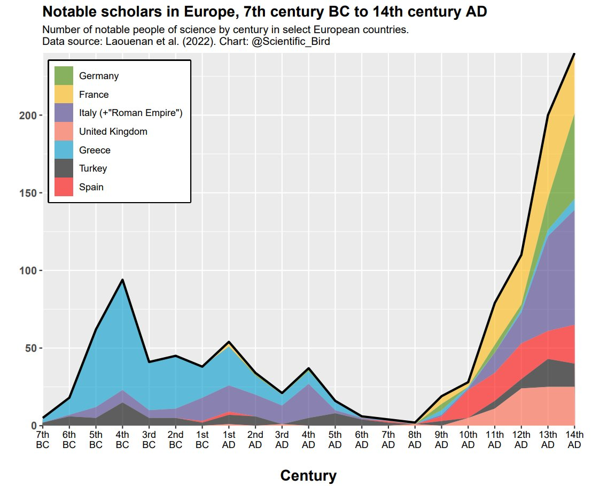

I’ve stared at too many maps to let this one slide
history
maps
Rome
Published
October 14, 2024

Have you seen this missing person?
Recently there have been a few different graphs floating around using some wikipedia data on notable figures throughout time matched between various language editions of Wikipedia. This data generating process is a bit suspect to say the least, but it’s what we have. One thing that interested me however was how this image ended out getting something interesting a bit wrong, that is that there appears to be a composition effect to the dark ages vs what would be expected in other situations. Three editions of the image have been floating around and all of them have issues with composition, that is the main driving force of the dark ages appears to be driven by the shift to Macedonian Hegemony and later Roman Hegemony over the country and then subsequently by the rise of countries that before had little to no development at all under the Romans. Some of the lack of Greek notables may be due to a lack of utilization of Greek nor of Turkish as we would expect those language groups to potentially house more granular data about their respective notables.. the Greek and the Turkish language wikipedias are ~250,000 and ~620,000 articles respectively.
From the data that the original poster used there’s the following bit of information: > Using the relevant urls corresponding to human biographies, we scraped the 7 following Wikipedia language editions: English, French, German, Italian, Spanish, Portuguese and Swedish that we call hereafter the European editions. Within the sample of individuals with at least one biography in the 7 language editions, 52.8% have 1 biography, 18.1% have 2 biographies (cumulative 70.9%), 8.7% have 3 biographies (cumulative 79.6%), 5% have 4 biographies (cumulative 87.8%) and 12.2% have 5 biographies or more.
So we can see that there’s not a lot of overlap of biographies and we should expect that there will be individuals who are covered in Greek and Turkish but not in these other European languages.
The other issue is that citizenship status in the Roman Empire includes countries that the original writer didn’t consider in the Dark Ages such as Egypt or in other cases people who in other eras would be said to have “Greek” citizenship based on geography end out getting ascribed their Roman citizenship in this case which means its hard to see whether the Fall of the Western Roman Empire is being accurately described by the data as Greece was still under the control of the Byzantine Empire for hundreds of years after the fall of Rome. Taking the “Roman_Empire” tagged individuals and running them through “ChatGPT o1-preview” with the following prompt: >“For each of the following, return the birthplace or if unknown, the place where these individuals mostly lived through their lives. Use cities where applicable and also modern countries that encompass these cities. Return the results in a csv format:”
Here we can see that some number of our “Roman_Empire” individuals are not from Western Europe such as Hypatia who lived and died in Alexandria in modern day Egypt so there is clearly some issue with this label going forward for discussing the Dark Ages. Hopefully you can see the necessity of splitting up this label for this analysis. So I used ChatGPT to enrich this data and provide the more applicable geographic bounds for these people. Hopefully these are mostly correct, it passed my spot check but you can check here in case there were hallucinations.
Now even if we restrict our countries to the core territories of the Western Roman Empire (sans Greek) we can see a different graph than we expected.
Here are the functions that are used later on, this basically takes the data and then applies century labels to it and also handles the plotting.
Code
# Function to convert year to centuryyear_to_century <-function(year) { century <-ceiling(abs(year) /100)if (year <0) {paste(century, "BCE") } else {paste(century, "CE") }}# Define the plotting function with background shading for Dark Agesplot_citizenship_by_century <-function(data, citizenship, max_century =NULL, highlight_start =6, highlight_end =10) {# Step 1: Filter data based on selected citizenship(s) and create necessary columns filtered_data <- data %>%filter(citizenship_1_b %in% citizenship) %>%mutate(era =ifelse(mid_point <0, "BC", "AD"),century_num =floor(abs(mid_point) /100) +1,century_label =paste0( century_num,case_when( century_num %%10==1& century_num %%100!=11~"st", century_num %%10==2& century_num %%100!=12~"nd", century_num %%10==3& century_num %%100!=13~"rd",TRUE~"th" )," Century ", era ),# **Important:** Create 'century_order' within 'filtered_data'century_order =ifelse(era =="BC", -century_num, century_num) )# Step 2: Determine the maximum century to displayif (!is.null(max_century)) { max_century_num <- max_century } else { max_century_num <-ceiling(max(abs(data$mid_point)) /100) +1 }# Step 3: Create a complete sequence of centuries for both BC and AD centuries_bc <-data.frame(century_num =1:7,era ="BC",stringsAsFactors =FALSE ) centuries_ad <-data.frame(century_num =1:max_century_num,era ="AD",stringsAsFactors =FALSE ) all_centuries <-bind_rows(centuries_bc, centuries_ad) %>%mutate(century_label =paste0( century_num,case_when( century_num %%10==1& century_num %%100!=11~"st", century_num %%10==2& century_num %%100!=12~"nd", century_num %%10==3& century_num %%100!=13~"rd",TRUE~"th" )," Century ", era ),century_order =ifelse(era =="BC", -century_num, century_num),era =as.character(era) # Ensure 'era' is character )# Step 4: Summarize counts per century and citizenship from filtered data summarized_data <- filtered_data %>%group_by(century_label, century_order, century_num, era, citizenship_1_b) %>%summarise(count =n(), .groups ='drop') %>%rename(citizenship = citizenship_1_b) #%>%# mutate(era = as.character(era)) # Ensure 'era' is character# Step 5: Create a complete grid of centuries and citizenships complete_data <- all_centuries %>%crossing(citizenship = citizenship) %>%# Create all combinationsleft_join(summarized_data, by =c("century_label", "century_order", "century_num", "era", "citizenship")) %>%mutate(count =ifelse(is.na(count), 0, count))# Step 6: Arrange data in chronological order and set factor levels complete_data <- complete_data %>%arrange(century_order) %>%mutate(century_label =factor(century_label, levels =unique(century_label)) )# Step 7: Prepare data for shaded background (Dark Ages)# Identify the range of centuries to highlight dark_ages_data <- all_centuries %>%filter( era =="AD", century_num >= highlight_start, century_num <= highlight_end ) %>%arrange(century_order)# Calculate numeric positions for xmin and xmax based on factor levels xmin_pos <-which(levels(complete_data$century_label) =="6th Century AD") -0.5 xmax_pos <-which(levels(complete_data$century_label) =="10th Century AD") +0.5# Step 8: Create the stacked bar plot with shaded background plot <-ggplot() +# Add shaded rectangle for Dark Agesgeom_rect(xmin = xmin_pos,xmax = xmax_pos,ymin =0,ymax =Inf,fill ="blue",alpha =0.8,inherit.aes =FALSE ) +annotation_custom(grob =rectGrob(gp =gpar(fill ="lightgrey", alpha =0.3)),xmin = xmin_pos,xmax = xmax_pos,ymin =0,ymax =Inf ) +# Add the stacked barsgeom_bar(data = complete_data,aes(x = century_label, y = count, fill = citizenship),stat ="identity",color ="black" ) +# Define fill colors for citizenshipsscale_fill_brewer(palette ="Set3", name ="Citizenship") +# Adjust palette as neededtheme_minimal() +labs(title ="Distribution of Notable Academics by Citizenship and Century",x ="Century",y ="Count" ) +theme(axis.text.x =element_text(angle =45, hjust =1),legend.position ="bottom" ) +# Optionally, add a custom annotation or label for the Dark Agesannotate("text",x = (xmin_pos + xmax_pos) /2,y =max(complete_data$count) *1.05, # Position above the highest barlabel ="Dark Ages",color ="black",size =4,fontface ="italic" )return(list(data = complete_data, plot = plot))}
The Dark Ages weren’t?
Now we can see the Dark Ages isn’t really borne out in the data here, it is the case that there was a decline in number of notable scholars in the 5th century but the dark ages doesn’t start until the last 25 years of that century. This notable scholars metric doesn’t work well here because in the 9th and 10th centuries the number of notable scholars is well placed among the heights of the Roman Empire and if we take the Dark Ages to be somewhat ironclad we should then restrict ourselves to only saying the 6th-8th Centuries are the Dark Ages.
If you want to check out other combinations of countries in Western Europe and how that influences the number of Notable Scholars throughout this time period you can check out the Shiny App I put together.
Maps can provide sanity checks
Just to continue on the general point without needing to get into the data, look at the following graphs that were the subject of this debate. On first glance it looks innocuous these countries are all areas that cover former provinces of Rome so it makes sense that they would be included..
  
Now look at their respective maps
From above we already had a great map of the Western Roman Empire so I’ll bring it back down here.
Western Roman Empire
Do you see the problem?
It’s hard to discuss the Dark Ages which refer to Western Europe after the fall of the Western Roman Empire when our data includes the Eastern Roman Empire’s provinces and African Provinces.
---title: "The Number of Notable Scholars does not a Dark Age make"subtitle: | I've stared at too many maps to let this one slidedate: "2024-10-14"categories: [history, maps, Rome]editor: visualcache: truedf_print: tibbleformat: htmlcode-fold: FALSEcode-tools: true# code-link: false---{width=80%}Recently there have been a few different graphs floating around using some wikipedia data on notable figures throughout time matched between various language editions of Wikipedia. This data generating process is a bit suspect to say the least, but it's what we have. One thing that interested me however was how this image ended out getting something interesting a bit wrong, that is that there appears to be a composition effect to the dark ages vs what would be expected in other situations. Three editions of the image have been floating around and all of them have issues with composition, that is the main driving force of the dark ages appears to be driven by the shift to Macedonian Hegemony and later Roman Hegemony over the country and then subsequently by the rise of countries that before had little to no development at all under the Romans. Some of the lack of Greek notables may be due to a lack of utilization of Greek nor of Turkish as we would expect those language groups to potentially house more granular data about their respective notables.. the Greek and the Turkish language wikipedias are ~250,000 and ~620,000 articles respectively.From the [data](https://www.nature.com/articles/s41597-022-01369-4#Sec28) that the original poster used there's the following bit of information:> Using the relevant urls corresponding to human biographies, we scraped the 7 following Wikipedia language editions: English, French, German, Italian, Spanish, Portuguese and Swedish that we call hereafter the European editions. Within the sample of individuals with at least one biography in the 7 language editions, 52.8% have 1 biography, 18.1% have 2 biographies (cumulative 70.9%), 8.7% have 3 biographies (cumulative 79.6%), 5% have 4 biographies (cumulative 87.8%) and 12.2% have 5 biographies or more.So we can see that there's not a lot of overlap of biographies and we should expect that there will be individuals who are covered in Greek and Turkish but not in these other European languages.The other issue is that citizenship status in the Roman Empire includes countries that the original writer didn't consider in the Dark Ages such as Egypt or in other cases people who in other eras would be said to have "Greek" citizenship based on geography end out getting ascribed their Roman citizenship in this case which means its hard to see whether the Fall of the Western Roman Empire is being accurately described by the data as Greece was still under the control of the Byzantine Empire for hundreds of years after the fall of Rome. Taking the "Roman_Empire" tagged individuals and running them through "ChatGPT o1-preview" with the following prompt:>"For each of the following, return the birthplace or if unknown, the place where these individuals mostly lived through their lives. Use cities where applicable and also modern countries that encompass these cities. Return the results in a csv format:"```{r}#| echo: false#| warning: falselibrary(dplyr)library(ggplot2)library(tidyr) # For crossing()library(stringr) # For string manipulationlibrary(grid)library(fuzzyjoin)un_petite_subset_trois <-read.csv("~/dark_ages_app/un_petite_subset_trois.csv")romans_new <-read.csv("~/romans_new.csv")un_petite_subset_trois <- un_petite_subset_trois %>%select(name, citizenship_1_b, birth_estimation, death_estimation, mid_point)```Here we can see that some number of our "Roman_Empire" individuals are not from Western Europe such as Hypatia who lived and died in Alexandria in modern day Egypt so there is clearly some issue with this label going forward for discussing the Dark Ages. Hopefully you can see the necessity of splitting up this label for this analysis. So I used ChatGPT to enrich this data and provide the more applicable geographic bounds for these people. Hopefully these are mostly correct, it passed my spot check but you can check here in case there were hallucinations.```{r}df_filtered <- un_petite_subset_trois %>%filter(citizenship_1_b =="Roman_Empire")to_be_determined <-unique(df_filtered$name)head(to_be_determined, 10)``````{r}#| echo: falsemain_data_replaced <- un_petite_subset_trois %>%left_join(romans_new, by =c("name"="Name")) %>%mutate(citizenship_1_b =na_if(citizenship_1_b, "")) main_data_replaced <- un_petite_subset_trois %>%stringdist_left_join(romans_new, by =c("name"="Name"), method ="jw", # Jaro-Winkler distance for name similaritymax_dist =0.2) %>%# Adjust max_dist to control strictnessmutate(citizenship_1_b =na_if(citizenship_1_b, ""))main_data<- main_data_replaced %>%mutate(merged_column =ifelse(is.na(Birthplace.Country), citizenship_1_b, Birthplace.Country) )main_data$citizenship_1_b <- main_data$merged_column```Now even if we restrict our countries to the core territories of the Western Roman Empire (sans Greek) we can see a different graph than we expected.```{r}#| echo: false# unique(cross.verified.database$un_subregion)# ## missing_region <- subset(cross.verified.database, un_subregion %in% c(""))# # # un_petite_subset <-subset(cross.verified.database, un_subregion %in% c("Western Europe", "Southern Europe", "Northern Europe", ""))# rm(cross.verified.database)# # unique_regions <- unique(un_petite_subset$citizenship_1_b)# unique_regions# # un_petite_subset_deux <- un_petite_subset %>%# filter(birth_estimation < 1200 & birth_estimation > -800) # # un_petite_subset_deux$mid_point <- ((un_petite_subset_deux$death_estimation - un_petite_subset_deux$birth_estimation)/2) + un_petite_subset_deux$birth_estimation# # un_petite_subset_trois <- un_petite_subset_deux %>%# filter(level2_main_occ == "Academia") ```Here are the functions that are used later on, this basically takes the data and then applies century labels to it and also handles the plotting. ```{r}#| code-fold: true# Function to convert year to centuryyear_to_century <-function(year) { century <-ceiling(abs(year) /100)if (year <0) {paste(century, "BCE") } else {paste(century, "CE") }}# Define the plotting function with background shading for Dark Agesplot_citizenship_by_century <-function(data, citizenship, max_century =NULL, highlight_start =6, highlight_end =10) {# Step 1: Filter data based on selected citizenship(s) and create necessary columns filtered_data <- data %>%filter(citizenship_1_b %in% citizenship) %>%mutate(era =ifelse(mid_point <0, "BC", "AD"),century_num =floor(abs(mid_point) /100) +1,century_label =paste0( century_num,case_when( century_num %%10==1& century_num %%100!=11~"st", century_num %%10==2& century_num %%100!=12~"nd", century_num %%10==3& century_num %%100!=13~"rd",TRUE~"th" )," Century ", era ),# **Important:** Create 'century_order' within 'filtered_data'century_order =ifelse(era =="BC", -century_num, century_num) )# Step 2: Determine the maximum century to displayif (!is.null(max_century)) { max_century_num <- max_century } else { max_century_num <-ceiling(max(abs(data$mid_point)) /100) +1 }# Step 3: Create a complete sequence of centuries for both BC and AD centuries_bc <-data.frame(century_num =1:7,era ="BC",stringsAsFactors =FALSE ) centuries_ad <-data.frame(century_num =1:max_century_num,era ="AD",stringsAsFactors =FALSE ) all_centuries <-bind_rows(centuries_bc, centuries_ad) %>%mutate(century_label =paste0( century_num,case_when( century_num %%10==1& century_num %%100!=11~"st", century_num %%10==2& century_num %%100!=12~"nd", century_num %%10==3& century_num %%100!=13~"rd",TRUE~"th" )," Century ", era ),century_order =ifelse(era =="BC", -century_num, century_num),era =as.character(era) # Ensure 'era' is character )# Step 4: Summarize counts per century and citizenship from filtered data summarized_data <- filtered_data %>%group_by(century_label, century_order, century_num, era, citizenship_1_b) %>%summarise(count =n(), .groups ='drop') %>%rename(citizenship = citizenship_1_b) #%>%# mutate(era = as.character(era)) # Ensure 'era' is character# Step 5: Create a complete grid of centuries and citizenships complete_data <- all_centuries %>%crossing(citizenship = citizenship) %>%# Create all combinationsleft_join(summarized_data, by =c("century_label", "century_order", "century_num", "era", "citizenship")) %>%mutate(count =ifelse(is.na(count), 0, count))# Step 6: Arrange data in chronological order and set factor levels complete_data <- complete_data %>%arrange(century_order) %>%mutate(century_label =factor(century_label, levels =unique(century_label)) )# Step 7: Prepare data for shaded background (Dark Ages)# Identify the range of centuries to highlight dark_ages_data <- all_centuries %>%filter( era =="AD", century_num >= highlight_start, century_num <= highlight_end ) %>%arrange(century_order)# Calculate numeric positions for xmin and xmax based on factor levels xmin_pos <-which(levels(complete_data$century_label) =="6th Century AD") -0.5 xmax_pos <-which(levels(complete_data$century_label) =="10th Century AD") +0.5# Step 8: Create the stacked bar plot with shaded background plot <-ggplot() +# Add shaded rectangle for Dark Agesgeom_rect(xmin = xmin_pos,xmax = xmax_pos,ymin =0,ymax =Inf,fill ="blue",alpha =0.8,inherit.aes =FALSE ) +annotation_custom(grob =rectGrob(gp =gpar(fill ="lightgrey", alpha =0.3)),xmin = xmin_pos,xmax = xmax_pos,ymin =0,ymax =Inf ) +# Add the stacked barsgeom_bar(data = complete_data,aes(x = century_label, y = count, fill = citizenship),stat ="identity",color ="black" ) +# Define fill colors for citizenshipsscale_fill_brewer(palette ="Set3", name ="Citizenship") +# Adjust palette as neededtheme_minimal() +labs(title ="Distribution of Notable Academics by Citizenship and Century",x ="Century",y ="Count" ) +theme(axis.text.x =element_text(angle =45, hjust =1),legend.position ="bottom" ) +# Optionally, add a custom annotation or label for the Dark Agesannotate("text",x = (xmin_pos + xmax_pos) /2,y =max(complete_data$count) *1.05, # Position above the highest barlabel ="Dark Ages",color ="black",size =4,fontface ="italic" )return(list(data = complete_data, plot = plot))}```## The Dark Ages weren't?Now we can see the Dark Ages isn't really borne out in the data here, it is the case that there was a decline in number of notable scholars in the 5th century but the dark ages doesn't start until the last 25 years of that century. This notable scholars metric doesn't work well here because in the 9th and 10th centuries the number of notable scholars is well placed among the heights of the Roman Empire and if we take the Dark Ages to be somewhat ironclad we should then restrict ourselves to only saying the 6th-8th Centuries are the Dark Ages. ```{r}#| code-fold: trueresult <-plot_citizenship_by_century(main_data, c("Italy", "France", "Spain", "Germany", "Switzerland", "United Kingdom"), max_century =11)print(result$plot)```If you want to check out other combinations of countries in Western Europe and how that influences the number of Notable Scholars throughout this time period you can check out the [Shiny App](https://brasidas.shinyapps.io/dark_ages_app/) I put together.## Maps can provide sanity checksJust to continue on the general point without needing to get into the data, look at the following graphs that were the subject of this debate. On first glance it looks innocuous these countries are all areas that cover former provinces of Rome so it makes sense that they would be included..{width=80%}{width=80%}{width=80%}Now look at their respective maps{width=80%}{width=80%}{width=80%}From above we already had a great map of the Western Roman Empire so I'll bring it back down here.{width=80%}Do you see the problem? It's hard to discuss the Dark Ages which refer to Western Europe after the fall of the Western Roman Empire when our data includes the Eastern Roman Empire's provinces and African Provinces.